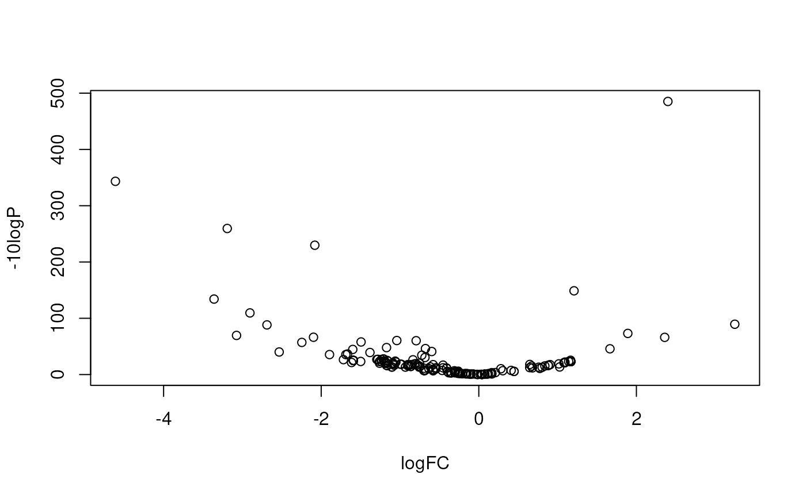

Create a list of edgeR DGEList object for repeat elements from salmon quants.
createDGELists(
quant_sfs,
qnames,
seq_anno,
select_feature,
cpus = 2,
norm_method = "RLE",
...
)The salmon quant.sf files path.
Human-readable names for each quant.sf file.
Output of prepareSeq function.
Type of feature. Available choices are: 'all', 'exon', 'intron', 'gene', or 'intergenic'.
Number of threads.
Normalization method for edgeR.
Parameters will be passed to DGEList. Please note, the default norm.factors and lib.size will be calculated at gene level.
A list of DGEList objects.
quant_sfs <- dir(system.file('extdata', package='ratte'), 'quant.sf',
full.names=TRUE)
qnames <- sub("^.*\\/(.*?).quant.sf", "\\1", quant_sfs)
rmsk <- readRDS(system.file('extdata', 'danRer11_rmsk_chr25_sub.RDS',
package='ratte'))
library(BSgenome.Drerio.UCSC.danRer11) # for sequences
#> Loading required package: BSgenome
#> Loading required package: BiocGenerics
#>
#> Attaching package: ‘BiocGenerics’
#> The following objects are masked from ‘package:stats’:
#>
#> IQR, mad, sd, var, xtabs
#> The following objects are masked from ‘package:base’:
#>
#> Filter, Find, Map, Position, Reduce, anyDuplicated, aperm, append,
#> as.data.frame, basename, cbind, colnames, dirname, do.call,
#> duplicated, eval, evalq, get, grep, grepl, intersect, is.unsorted,
#> lapply, mapply, match, mget, order, paste, pmax, pmax.int, pmin,
#> pmin.int, rank, rbind, rownames, sapply, setdiff, table, tapply,
#> union, unique, unsplit, which.max, which.min
#> Loading required package: S4Vectors
#> Loading required package: stats4
#>
#> Attaching package: ‘S4Vectors’
#> The following object is masked from ‘package:utils’:
#>
#> findMatches
#> The following objects are masked from ‘package:base’:
#>
#> I, expand.grid, unname
#> Loading required package: IRanges
#> Loading required package: GenomeInfoDb
#> Loading required package: GenomicRanges
#> Loading required package: Biostrings
#> Loading required package: XVector
#>
#> Attaching package: ‘Biostrings’
#> The following object is masked from ‘package:base’:
#>
#> strsplit
#> Loading required package: BiocIO
#> Loading required package: rtracklayer
#>
#> Attaching package: ‘rtracklayer’
#> The following object is masked from ‘package:BiocIO’:
#>
#> FileForFormat
library(TxDb.Drerio.UCSC.danRer11.refGene) # for genomic annotation
#> Loading required package: GenomicFeatures
#> Loading required package: AnnotationDbi
#> Loading required package: Biobase
#> Welcome to Bioconductor
#>
#> Vignettes contain introductory material; view with
#> 'browseVignettes()'. To cite Bioconductor, see
#> 'citation("Biobase")', and for packages 'citation("pkgname")'.
seq_anno <- prepareSeq(Drerio,
TxDb.Drerio.UCSC.danRer11.refGene,
rmsk,
subsetGRanges=GRanges('chr25:11000000-15000000'))
#> Warning: some group names are NAs or duplicated
ys <- createDGELists(quant_sfs, qnames, seq_anno, 'all',
group=sub('.rep.', '', qnames))
ys[[1]]
#> An object of class "DGEList"
#> $counts
#> Reg.rep1 Reg.rep2 Uni.rep1 Uni.rep2
#> (A)n 22.143 27.214 28.546 19
#> (AAA)n 0.000 0.000 0.000 0
#> (AAAAAT)n 0.000 0.000 0.000 0
#> (AAAAT)n 0.000 0.000 0.000 0
#> (AAAC)n 0.000 0.000 0.000 0
#> 903 more rows ...
#>
#> $samples
#> group lib.size norm.factors
#> Reg.rep1 Reg 7605.759 1
#> Reg.rep2 Reg 8182.806 1
#> Uni.rep1 Uni 13468.979 1
#> Uni.rep2 Uni 12068.875 1
#>
#> $tpm
#> Reg.rep1 Reg.rep2 Uni.rep1 Uni.rep2
#> (A)n 18.62545 19.84447 175.1395 160.4573
#> (AAA)n 0.00000 0.00000 0.0000 0.0000
#> (AAAAAT)n 0.00000 0.00000 0.0000 0.0000
#> (AAAAT)n 0.00000 0.00000 0.0000 0.0000
#> (AAAC)n 0.00000 0.00000 0.0000 0.0000
#> 903 more rows ...
#>
names(ys)
#> [1] "repName" "repClass" "repFamily"
library(edgeR)
#> Loading required package: limma
#>
#> Attaching package: ‘limma’
#> The following object is masked from ‘package:BiocGenerics’:
#>
#> plotMA
res <- lapply(ys, function(y){
keep <- filterByExpr(y)
y <- y[keep, keep.lib.sizes=TRUE]
design <- model.matrix(~y$samples$group)
y <- estimateDisp(y, design)
fit <- glmFit(y, design)
lrt <- glmLRT(fit, coef=2)
topTags(lrt, n=nrow(lrt))
})
tt <- as.data.frame(res[[1]])
plot(tt$logFC, -10*log10(tt$PValue),
xlab='logFC', ylab='-10logP')
